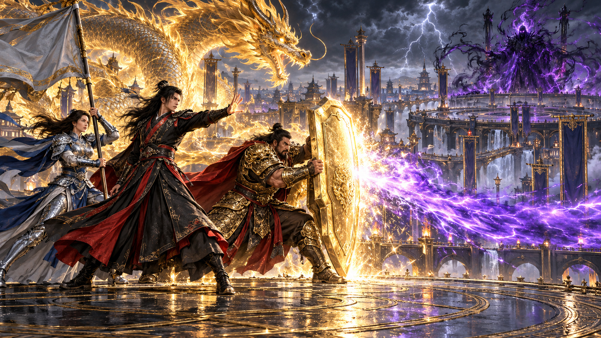
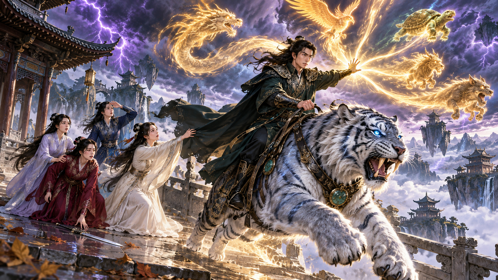

一纸断千谋
2026-11-06 00:00 北京时间 · 2609 KR63
¡El banco cobró deudas de sus abuelos muertos! Él destapó una estafa que atrapó a todo el pueblo
银行竟追讨已故祖辈的欠款！他一路查下去，揭开了坑害全村的骗局！
2026年11月6—15日 · 每天北京时间00:00、05:00 · 每部一个标题、一张封面
2026-11-06 00:00 北京时间 · 2609 KR63
¡El banco cobró deudas de sus abuelos muertos! Él destapó una estafa que atrapó a todo el pueblo
银行竟追讨已故祖辈的欠款！他一路查下去，揭开了坑害全村的骗局！
2026-11-06 05:00 北京时间 · 2609 KR53
¡Los espectros invadieron su país! Activó su sistema e invocó a 3000 maestros para contraatacar
诡异竟入侵他的国家！他激活系统，召唤三千祖师直接反攻！
2026-11-07 00:00 北京时间 · 2609 KR49
¡El muerto levantó la mano y señaló al asesino! Un artesano de mil años lo logró con sus agujas
死人竟抬手指出凶手！这个活了千年的缝尸匠，用几根针做到了！
2026-11-07 05:00 北京时间 · 2609 KR45
¡Despertó como eunuco con un sistema! El emperador quiso matarlo y él terminó como regente
一觉醒来成了太监，竟还自带系统！皇帝想杀他，他却一路当上摄政王！
2026-11-08 00:00 北京时间 · 2609 KR46
¡Un masajista contra toda una red de apuestas! Su familia podía estar en manos de los culpables
一个足疗工，要对抗整张地下赌网！他的家人可能也落在了幕后黑手手里！
2026-11-08 05:00 北京时间 · 2609 KR43
¡Lo traicionaron y acabó convertido en gallo! Su sistema de fama lo hizo evolucionar en fénix
遭人背叛后，他竟变成一只鸡！靠声望系统一路进化，最终化身凤凰！
2026-11-09 00:00 北京时间 · 2609 KR42
¡Humillaron a un anciano y golpearon a su nieto! Era un inmortal sellado durante 50 años
他们羞辱老人，还打伤他的孙子！却不知眼前之人，是自封修为五十年的仙人！
2026-11-09 05:00 北京时间 · 2609 KR38
¡Enseñó 500 años sin poder ver! Sus alumnos enfrentaron a los dioses y él por fin abrió los ojos
他双目失明，却传道整整五百年！弟子们逆战诸神，他终于睁开双眼！
2026-11-10 00:00 北京时间 · 2609 KR39
¡Oyó risas de mujer en una casa vacía! Buscaba a su novia y el incienso lo llevó a una trampa
空屋里竟传来女人的声音！他追查失踪女友，却发现香火背后藏着陷阱！
2026-11-10 05:00 北京时间 · 2609 KR36
¡Despertó como pulpo con un sistema de predicción! Acertó los partidos y volvió rico a un endeudado
一觉醒来变成章鱼，竟绑定预言系统！精准预测球赛，让负债青年一夜暴富！
2026-11-11 00:00 北京时间 · 2609 KR32
¡Lo mataron y renació como renacuajo! Devoró, evolucionó y volvió como Emperador Rana para vengarse
他被害后竟重生成蝌蚪！靠吞噬不断进化，再归来时已是复仇的蛙帝！
2026-11-11 05:00 北京时间 · 2609 KR28
¡Su vecino desvió el agua y arruinó su casa! Él construyó un muro y la lluvia hizo el resto
恶邻改动排水，害他家被淹！他建起一道墙，下一场大雨让局势彻底逆转！
2026-11-12 00:00 北京时间 · 2609 KR50
¡Les pagó los estudios y aun enfermo quisieron aprovecharse de él! Esta vez respondió con la ley
他资助他们读书，自己病重时却仍遭算计！这一次，他选择用法律讨回公道！
2026-11-12 05:00 北京时间 · 2609 KR33
¡En vez de practicar con espadas, los puso a hacer exámenes! Su secta acabó venciendo a las demás
别人练剑，他却让弟子做试卷！这个宗门最后竟打败了其他所有宗门！
2026-11-13 00:00 北京时间 · 2609 KR26
¡Su esposa se encerraba con un muñeco! Instaló una cámara y descubrió la traición de su mejor amigo
妻子竟总和人偶独处一室！他装上监控暗查，却发现最好的兄弟也卷入了背叛！

2026-11-13 05:00 北京时间 · 2609 KR25
¡Tras ocho derrotas, convocó a un general mortal! Su forma real era la última esperanza del país
连败八场后，他竟召唤一个凡人将领！而将领的真正形态，成了国家最后的希望！
2026-11-14 00:00 北京时间 · 2609 KR23
¡Exigieron 300 mil yuanes por su novia! Él la rescató: habían humillado a un millonario
他们开口就要三十万彩礼！他救走新娘，对方却不知自己羞辱的竟是个富豪！
2026-11-14 05:00 北京时间 · 2609 KR17
¡Activó un sistema de ferretería entre inmortales! Usó un cañón de agua contra sus espadas
穿越修仙世界，他竟激活五金店系统！别人御剑，他直接搬出高压水炮！
2026-11-15 00:00 北京时间 · 2609 KR16
¡Entró a cazar bajo la luna roja por su madre! Lo estaban usando de cebo para encontrar una tumba
为救母亲，他冒险在血月之夜进山打猎！却被人当成寻找古墓的活饵！

2026-11-15 05:00 北京时间 · 2609 KR15
¡Cuatro hermanas de secta lo traicionaron! Él ascendió con sus bestias y ellas quedaron mortales
四位师姐联手背叛了他！他靠御兽之道飞升，她们却沦为凡人！